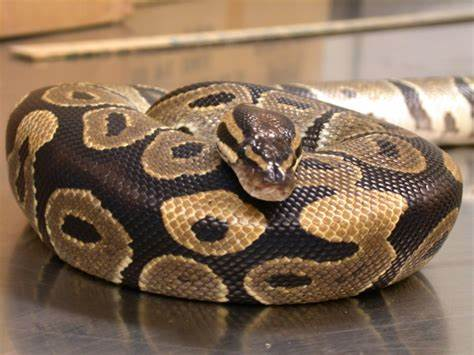

(Python regius)
Are you thinking about getting a snake? A ball python is a great beginner pick for a snake. In this website, you'll learn all you need to know about taking care of your very own ball python!
Ball pythons, along with corn snakes, are the two most popular pet snakes for beginners! They originated from South Africa, but now they are being kept as pets all around the world. You can find them everywhere, from pet stores to snake breeders to reptile expos, even online. When buying and choosing a ball python, make sure to inspect it for parasites and malnutrition before buying. It is recommended to acquire captive-bred snakes and to make sure they are eating well before purchasing.
Ball pythons can grow to 3-5 feet in length. For this species, females are often larger than males, sometimes even reaching 6 feet in length! Males are smaller on average, so make sure you’re buying the correct gender in relation to its size. If you want a smaller snake, go with a male python, and vice versa. Newborn hatchlings are tiny, approx. 10 inches in length.
In the wilderness, these snakes usually only live up to 10 years. However, in captivity, a life span of 20-30 years can be expected! Your pet ball pythons will stick around you for a long time, so make sure you are prepared for that.
Ball pythons probably have the most variety of colors compared to other pet snake species. This is one of the reasons for their appeal to newer owners. ‘Morphs’ are unusual and usually genetically heritable color patterns that can look striking and interesting to the eye.
Ball Pythons can be as simple or as elaborate as you want when it comes to housing your snake.
However, you should at least have some of these things in your cage.
Like most snakes, ball pythons eat mice or rats. Feed your python approx. once a week, however, do not be scared if your snake does not eat. Ball pythons are notorious for being picky eaters at certain times of the year. If this happens, continue to offer them food every 10 to 14 days until they eat.
Feed your ball python either large mice or small rats, make sure the food you’re giving them is not bigger than the circumference of the snake. Do not attempt to handle your snake right after or before feeding, as this might cause stress in the snake and cause them to not eat.
Ball pythons are beginner-friendly snakes to handle! Unlike corn snakes, ball pythons won’t move around as much, so you don’t have to worry about them slithering away. Avoid fast movements when handling your snake, after the snake learns you’re not going to hurt them, they often enjoy being picked up!
On the rare occasion that you get bitten, the bite is superficial and ball pythons are not venomous. If this happens, calmly put your snake back into its enclosure, and then wash the wound with soap and water to avoid infection. If the snake bite is severe, you should seek medical attention, however, this is rare.
Ball python enclosures must have one hot spot, and another side that is cool. The basking spot temperature should be around 31-35.5 degrees Celsius and the cool spot should be 25.5 - 26.6 degrees Celsius. The temperature should not fall beneath 24 degrees Celsius. It is very important to know what temperature your enclosure is at, make sure you use a thermometer!
Extra lighting is not needed for ball pythons, but if used, should run on a 12 -hour to 12-hour cycle, since continuous bright lighting can be stressful to pythons.
Ball pythons like humidity levels of 50-60 percent.